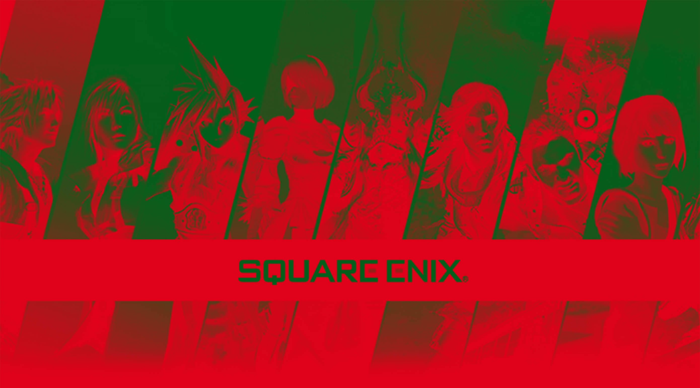

Square Enix
Square Enix Holdings Co., Ltd — японский разработчик и издатель компьютерных игр, а также их дистрибьютор. Кроме того, компания является издателем печатной продукции, а также фильмов и сериалов. Наибольшую известность компания получила благодаря франшизам компьютерных ролевых игр Final Fantasy, Dragon Quest, Kingdom Hearts и другим. Продажи некоторых из них превысили 10 млн копий, а продажи игр франшизы Final Fantasy превысили 115 млн копий. Штаб-квартира компании расположена в здании Shinjuku Eastside Square Building в районе Синдзюку города Токио.
Enix
Компания Enix была образована 22 сентября 1975 года как сервисный центр Eidansha Boshu японским предпринимателем и бывшим архитектором Ясухиро Фукусима. Enix занималась в основном изданием компьютерных игр, часто от эксклюзивных партнёров компании. Вероятно, самой известной серией игр, изданной компанией, стала Dragon Quest для игровых приставок, которую разрабатывала компания Chunsoft. Ключевыми разработчиками компании были директор Коити Накамура, сценарист Юдзи Хории, художник Акира Торияма, композитор Коити Сугияма. Dragon Quest, первая ролевая игра компании для Famicom вышла в 1986 году. Со временем продажи игры в Японии превысили 1,5 млн копий, что сделало эту франшизу компании наиболее доходной.
После заявления от постоянного и основного конкурента Square о том, что они будут разрабатывать игры эксклюзивно для игровой приставки PlayStation, Enix в январе 1997 объявила о том, что будет выпускать игры как для приставок от Nintendo, так и от Sony. Это вызвало существенно повышение котировок как акций Enix, так и Sony. По состоянию на ноябрь 1999 года акции Enix были размещены в 1-ой секции Токийской фондовой биржи с пометкой «крупная компания».
Square
Компания Square была открыта в октябре 1983 года Масафуми Миямото как подразделение по разработке компьютерных игр Den-Yu-Sha, компании по строительству линий электропередачи, которой владел его отец. Не смотря на то, что в то время разработка компьютерных игр обычно велась одним программистом, Миямото был уверен, что можно повысить эффективность работы, если бы над проектом работали профессиональные сценаристы, программисты и графические дизайнеры.
"If you want to be a hero, you gotta have dreams"
— Angeal, Final Fantasy Crisis Core
В сентябре 1986 года компания стала независимой, что позволило Миямото официально её зарегистрировать как Square Co., Ltd. После издания нескольких безуспешных игр для Famicom компания в 1987 году переехала в район Уэно, Токио, где разработала ролевую игру Final Fantasy, вдохновившись успехом игры Dragon Quest 1986-го года от Enix. Final Fantasy стала успехом, было продано более 400 тыс. копий. Игра превратилась в основную франшизу Square, породив большую серию игру, существующую по настоящее время.
Ведомые успехом франшизы Final Fantasy, Square разработали большое количество широко известных игры, например, Chrono Trigger, Chrono Cross, Secret of Mana, Legend of Mana, Xenogears, Brave Fencer Musashi, Parasite Eve, SaGa Frontier, Romancing SaGa, Vagrant Story, Kingdom Hearts (в сотрудничестве с Disney Interactive), Super Mario RPG (под руководством Сигэру Миямото). К концу 1994 года компания заработала репутацию издателя высококачественных компьютерных ролевых игр. Square была одной из большого числа компаний, планировавших разработку для приставки Nintendo 64. Однако, ввиду более низкой стоимости разработки для приставок, основанных на CD-ROM — таких как Sega Saturn и PlayStation, компания решила переключиться на разработку для последних систем. Final Fantasy VII стала одной из таких игр, её продажи составили 9,8 млн копий, при этом игра заняла второе место среди бестселлеров для PlayStation.
Сделка по слиянию
Сделка по слиянию компаний Square и Enix прорабатывалась по крайней мере с 2000 года. Финансовый провал первого фильма Square «Последняя фантазия: Духи внутри» в 2001 году значительно уменьшил желание Enix производить слияние с теряющий деньги компанией. Столкнувшись с финансовыми потерями и в следующем году, Square сблизилась с Sony для вливания капитала в компанию. В результате 8 октября 2001 года Sony купила долю 18,6 % в Square. После успеха Final Fantasy X и Kingdom Hearts финансовое состояние компании стабилизировалось, и в 2002 году компания фиксирует максимальную маржу операционной прибыли в своей истории. 25 ноября 2002 года было анонсировано продолжение переговоров по слиянию Square и Enix. Целями слияния были поставлены обоюдное снижение стоимости разработки и усиление конкуренции с иностранными разработчиками. Президент и CEO Square описывал ситуацию перед слиянием следующим образом: «Square тоже полностью восстановилась, то есть слияние происходит в момент, когда обе компании достигли своих максимальных высот».
"These guys are sick" — Aerith, FFVII
Некоторые акционеры испытывали сомнения на счет слияния. Наиболее заметным из них был Миямото, основатель и крупнейший акционер Square, поскольку после объединения под его контролем оказывалась существенно меньшая доля объединённой компании. Такаси Оя (англ. Takashi Oya) из Deutsche Securities с другой стороны критиковал сделку, он высказывал сомнения в выгодах такого слияния: «Enix имеет немного собственных разработчиков и отдает разработку на аутсорсинг, тогда как Square все делает самостоятельно. Их слияние не несет негативных факторов, и будет практически бесполезно в результате объединения операционной деятельности». Сомнения Миямото были развеяны повышением коэффициента обмена акций Square на акции Enix с 1:0,81 до 1:0,85. После этого сделка была одобрена. Сделка произошла 1 апреля 2003 года, в результате которой была создана новая организация, Square Enix. После объединения более 80 % работников Square Enix составляли бывшие работники Square. В результате слияния президентом объединённой компании стал бывший президент Square Ёити Вада, бывший президент Enix Кэйдзи Хонда стал вице-президентом новой компании. Ясухиро Фукусима, основатель Enix и крупнейший акционер объединённой компании, стал почетным председателем.
Beware, the answer you seek may forever change your life for the worse
— Freya, FFIX
В результате слияния компания Enix «выжила» и была переименована в Square Enix, а компания Square Co., Ltd. была упразднена. В июле того же года штаб-квартира Square Enix была перемещена в район Сибуя, Токио как часть плана по слиянию двух компаний.
Структура компании
Организация разработки
После слияния в 2003 году подразделение разработки Square Enix было организовано из восьми Отделов разработки продуктов (англ. Product Development Divisions, яп. 開発事業部) Square и двух аналогичных отделов Enix, каждый из которых нацелен на разработку различных групп игр. Эти отделы распределены по различным офисам. Например, 5-й отдел (англ. Product Development Division 5) размещен в офисах в Осаке и Токио.
Согласно Ёити Вада, подразделение разработки к марту 2007 года было реорганизовано из системы отделов разработки в систему, основанную на проектах. Однако, до 2013 года команды, ответственные за серии Final Fantasy и Kingdom Hearts, совокупно описывались как 1-й отдел производства (англ. 1st Production Department, яп. 第1制作部). 1-й отдел производства был сформирован осенью 2010 года из совокупности отделов разработки Square Enix, расположенных в Токио и Осаке, а Синдзи Хасимото стал его руководителем.
В декабре 2013 года производственные подразделения Square Enix были реорганизованы в 12 бизнес-отделов (англ. Business Divisions). С учётной записи в Twitter, которая ранее принадлежала 1-му отделу производства, теперь распространяется информация об играх, разрабатываемых бизнес-отделами с 1 по 4.
Модель бизнеса
В центре бизнес-модели Square Enix находится идея «полиморфного контента», которая предполагает разработку франшиз для множества разнообразного оборудования, а не ограничение в рамках одной игровой платформы. Ранним примером этого подхода является серия манги «Стальной алхимик» от Enix, которая получила адаптации в виде двух аниме-сериалов, двух полнометражных фильмов, нескольких романов и компьютерных игр. Среди других «полиморфных» проектов можно выделить серию «Компиляция Final Fantasy VII», Code Age Commanders, серию игр Mana, вселенную «Ивалис», а также неоконченную, по состоянию на 2016 год, серию Fabula Nova Crystallis Final Fantasy. Согласно Ёити Вада: «Вообще, очень сложно сорвать джекпот. Но, единожды его сорвав, мы должны выжать из него весь сок». Аналогично серии Greatest Hits от Sony, у Square Enix также есть серия Ultimate Hits, в рамках которой компания переиздает свои бестселлеры по сниженным ценам.
В основе обычной модели гейм-дизайна Square Enix лежат прежде всего сюжет, персонажи и художественное оформление. Боевые системы, игровые карты местности и катсцены разрабатываются позже. Согласно Таку Мурата, такой процесс стал моделью разработки после успеха игры Final Fantasy VII от Square в 1997 году. В проекте по созданию Final Fantasy XIII принимали участие до 180 художников, 30 программистов и 36 гейм-дизайнеров, однако имеются результаты исследований, по которым в будущем возможна реструктуризация с передачей крупномасштабных разработок на аутсорсинг[62].
Интеллектуальная собственность
Компьютерные игры — основная сфера деятельности Square Enix, компания получила наибольшую известность благодаря франшизам своих ролевых игр, однако в коллекции компании есть и многое другое.
- Компьютерные игры
- Игровые движки
- Онлайн-игры
- Игры для аркадных автоматов
- Фильмы
- Манга
- Сувениры и сопутствующая продукция
Также в марте 2011 года Square Enix основала дочернюю компанию по разработке мобильных приложений — Hippos Lab, а в 2012 году ещё одну — Square Enix Montreal. Третья компания по разработке мобильных игр, Smileworks, была открыта в Индонезии в январе 2015 года. Недолго, с сентября 2014 по январь 2016 года, существовала компания Shinra Technologies, разрабатывавшая облачные игры.